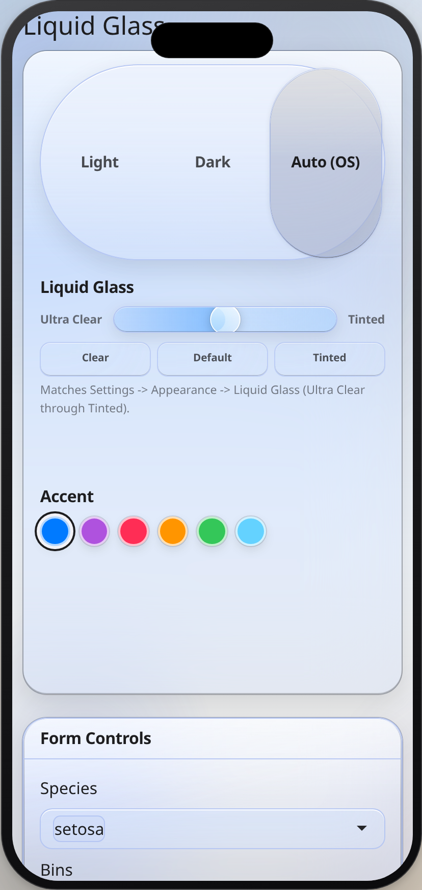

This vignette is installed with the package. Open it with
vignette("shinyglass").
browseVignettes("shinyglass") lists it with the other
vignettes. The same recipe is help("shinyglass"), also
available as help("shinyglass-package").
Intensity runs from 0 (Ultra Clear) to 1
(Tinted). The default is 0.5. Do not pass
material = "clear"; that argument is deprecated.
library(shinyglass)
inherits(glass_theme(preset = "auto", intensity = 0.5), "bs_theme")
#> [1] TRUEMinimal app
glass_page() is the one-call page. It includes Light /
Dark / Auto, the intensity slider, and accent wells, and it remembers
the choices for that path. Call observe_glass() in the
server.
library(shiny)
library(shinyglass)
ui <- glass_page(
title = "Hello, glass",
sliderInput("n", "Bars", 5, 30, 15),
plotOutput("plot")
)
server <- function(input, output, session) {
observe_glass(input, session)
output$plot <- renderPlot({
pal <- glass_plot_colors(input = input)
barplot(seq_len(input$n), col = pal$fill, border = NA, col.axis = pal$ink)
}, bg = "transparent")
}
shinyApp(ui, server)Mobile support
The same app works on desktop and phone with no extra code. Controls are sized for touch, sidebars and popovers open and close as expected on a phone, and pages do not scroll sideways. On a desktop, each live demo has a Phone view button that shows it in a phone-sized frame.

Add glass to an existing app
Keep the page you already have. bslib page_sidebar(),
page_fluid(), page_navbar(), and
page_fillable() take theme. So do
fluidPage() and navbarPage().
library(shiny)
library(bslib)
library(shinyglass)
ui <- page_sidebar(
title = "Existing app",
theme = glass_theme(preset = "auto", intensity = 0.5),
sidebar = sidebar(
glass_theme_toggle(),
glass_intensity_slider()
),
card(
card_header("Series"),
plotOutput("plot")
)
)
server <- function(input, output, session) {
observe_glass(input, session)
output$plot <- renderPlot({
pal <- glass_plot_colors(input = input)
barplot(seq_len(15), col = pal$fill, border = NA, col.axis = pal$ink)
}, bg = "transparent")
}
shinyApp(ui, server)The same theme works on fluidPage() and
navbarPage():
ui <- fluidPage(
theme = glass_theme(preset = "auto", intensity = 0.5),
glass_theme_toggle(),
glass_intensity_slider(),
plotOutput("plot")
)glass_theme() does not persist choices unless you set
persist = TRUE. glass_page() turns persistence
on for you.
Key options
| Argument | Default | Allowed |
|---|---|---|
preset |
"light" on glass_theme(),
"auto" on glass_page()
|
"light", "dark", "auto"
|
intensity |
0.5 |
0 to 1
|
primary |
"#007AFF" |
hex, rgb(), or a name from
glass_system_colors()
|
plot_surface |
"clear" |
"clear", "opaque"
|
scene |
"default" ("tahoe" on
glass_page()) |
names(glass_scenes()) |
persist |
FALSE (TRUE on
glass_page()) |
TRUE or FALSE
|
icon_style |
"clear" |
"clear", "color", "all"
|
floating_sidebar |
FALSE |
TRUE or FALSE
|
refraction, morph, press,
scroll_edge, minimize_tabs
|
TRUE |
TRUE or FALSE
|
update_glass_theme(session, ...) changes these in a
running app. Leave an argument NULL to keep the current
value. Under Auto, color plots with
glass_resolved_preset(input), not the string
"auto".
Migrating to 0.5.0
vignette("migrating") is the full note. The short
version:
- Default intensity moved from
0.45to0.5. - Delete
material = "clear". Passintensityinstead. If you omitintensity, clear still maps to0.12and warns. Writeintensity = 0.12to keep that clearer look. - Specular highlights are static top and bottom bands.
specular = FALSEhides them. They do not follow the pointer. -
refraction,morph,press,scroll_edge,minimize_tabs, and clear icon ink are on.floating_sidebarstays off until you set it toTRUE. - Existing page functions and click targets keep working.
Plots, chat, and React
Transparent plots need bg = "transparent" and ink from
glass_plot_colors(input = input). When a chart is hard to
read on the wallpaper, set plot_surface = "opaque", or add
glass_plot_surface_input() and
observe_glass_plot_surface(). ggplot2, plotly, gt, and DT
helpers are theme_glass(), plotly_glass(),
gt_theme_glass(), and dt_options_glass().
shinychat: page_chat(theme = glass_theme()). A sources
panel can be bslib::offcanvas().
shinyreact: the theme argument must be named, or the compiled CSS is dropped.
ui <- glass_page_react(theme = glass_theme(preset = "auto"))shinyreact::page_react_html() has no theme
argument. Pass extra_deps = glass_theme_dependencies().
Build the client from window.shinyglass
(GlassPage, GlassCard,
GlassButton, GlassIntensitySlider,
useGlassTheme). Do not bundle a second React.
Pitfalls and fixes
| What you see | Fix |
|---|---|
| Cards or text ignore the glass colors | Remove app CSS that sets those colors. Use
glass_css_tokens() or
glass_theme(tokens = list(blur = "28px")). |
| The plot is a solid rectangle, or the series disappears on the wallpaper |
renderPlot(..., bg = "transparent") and
glass_plot_colors(). Or
plot_surface = "opaque". |
| The toggle or slider does nothing | Call observe_glass(input, session) in the server.
Custom ids need the matching observe_glass_*() helper.
observe_glass() only watches glass_toggle,
glass_intensity, and glass_accent. |
| Plot colors stay on one mode while Auto is selected | Use glass_resolved_preset(input), which is
"light" or "dark". |
Warning about material = "clear"
|
Delete material. Pass intensity from
0 to 1. Use 0.12 for the old
clear look. |
| shinyreact page has no glass CSS | Pass theme = glass_theme() by name. |
| Blur makes a screenshot or PDF muddy |
glass_flatten(session, TRUE) or open the app with
?glass_flatten=1. |
| The glass is solid even though intensity is low | The OS setting for reduced transparency, increased contrast, or forced colors is on. That override is intentional. |